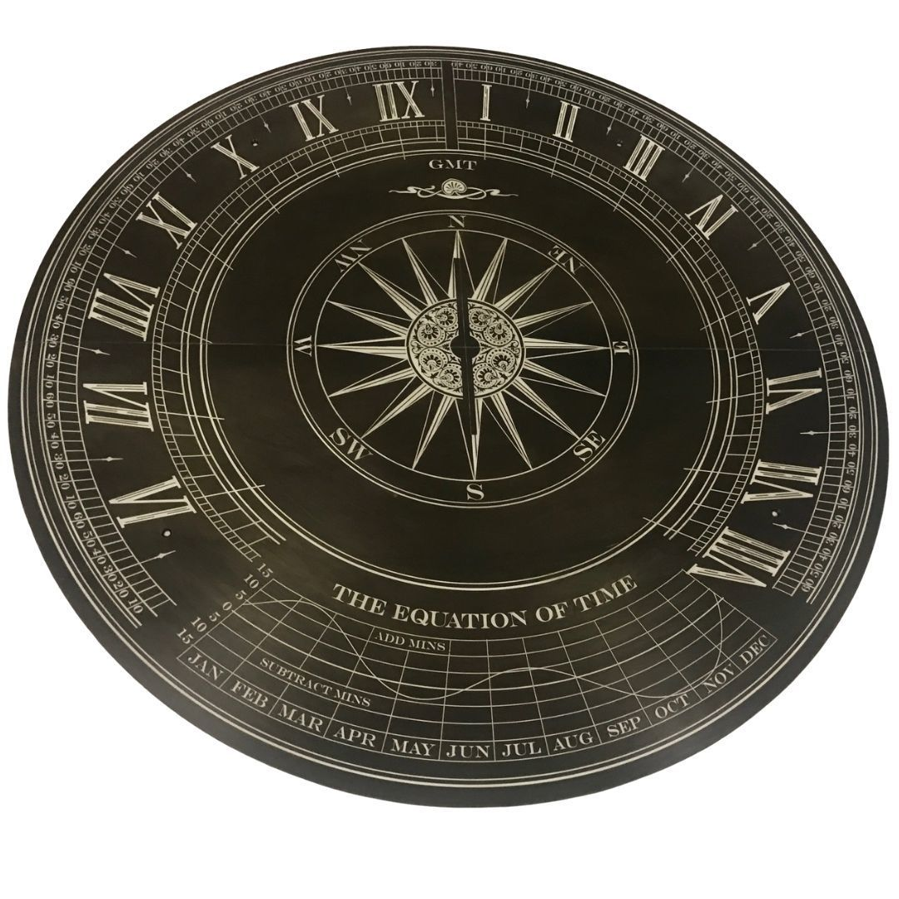

🏨 Architektur-Requisiten
Gebäudeschilder, Türschilder, Straßenschilder und Wegweiser – authentisch gealtert oder neuwertig.
Geätzte Metall-Schilder und Requisiten für Themenparks, Filmsets und TV-Produktionen – authentisch, langlebig und auf Ihre Anforderungen zugeschnitten.
In Themenparks, Filmsets und TV-Produktionen zählt Authentizität. Unsere geätzten Metallteile schaffen echte Atmosphäre – von verwitterten Hotelschildern über technische Bedienfelder bis zu kunstvollen Dekorationselementen.
Das chemische Ätzverfahren ermöglicht es, praktisch jede gewünschte Optik zu erzielen: von brandneuem Hochglanz-Edelstahl bis zur jahrzehntealten Patina. In Kombination mit unserer Patinierungsarbeit entstehen Requisiten, die auch bei Nahaufnahmen absolut überzeugend wirken.
Wir haben bereits für zahlreiche namhafte Produktionen und Themenpark-Projekte gearbeitet und verstehen die besonderen Anforderungen der Branche – von engen Zeitplänen bis zu höchsten Qualitätsansprüchen.

Gebäudeschilder, Türschilder, Straßenschilder und Wegweiser – authentisch gealtert oder neuwertig.
Bedienfelder, Schalttafeln, Maschinenschilder und technische Anzeigen für Science-Fiction- und Historien-Sets.
Detaillierte Landkarten, Stadtpläne, Hafenpläne und topografische Karten als Set-Deko oder -Requisit.
Metallverkleidungen, Geländer, Reliefs und kunstvolle Szenenbauteile für Set-Bauten.
Dauerhafte Schilder für Freizeitparks, Zoos, Museen und andere Attraktionen – auch unter wechselnden Witterungsbedingungen.
Geätzte Awards, Pokale und Ehrentafeln für Promotions, Events und Set-Storytelling.
Wir verstehen die besonderen Anforderungen von Film, TV und Themenparks – und liefern entsprechend.
Jahrelange Erfahrung mit Film- und TV-Produktionen – wir wissen, was auf dem Set zählt.
Flexible Fertigung und Express-Optionen für knappe Produktionszeiten – einschließlich Same-Day- und Next-Day-Lieferung.
Jede gewünschte Optik – von poliertem Neumaterial bis zur authentischen Alterspatina.
Strenge Vertraulichkeit für alle Produktionsprojekte – wir schützen Ihre Set-Geheimnisse.
Kontaktieren Sie uns frühzeitig – wir beraten Sie gerne und erstellen ein unverbindliches Angebot.